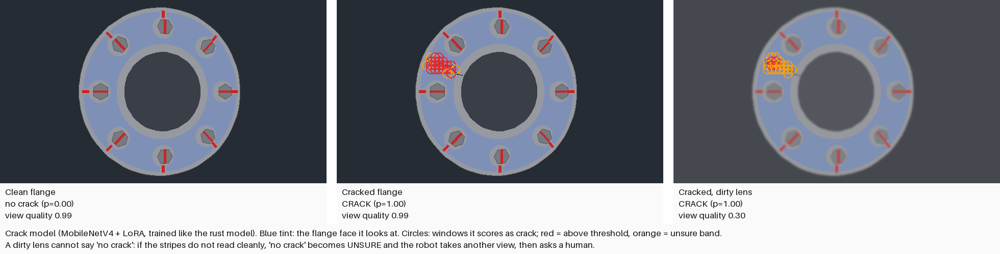
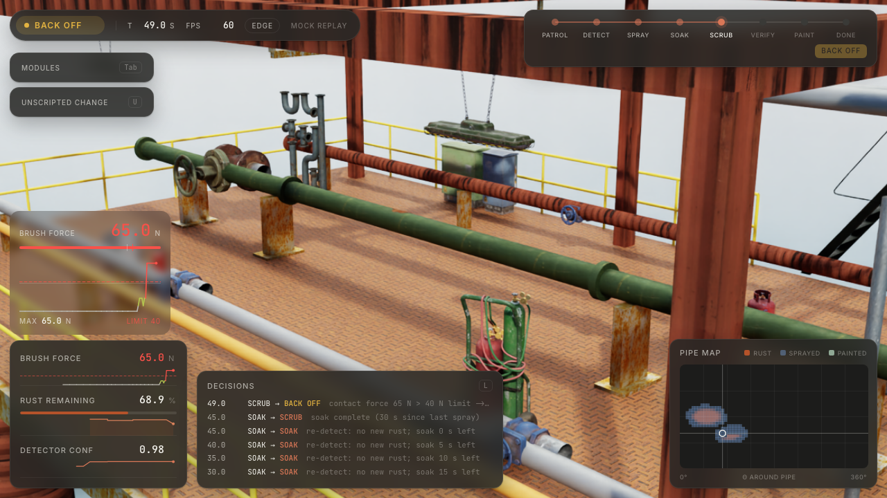

One quadruped, two jobs on an offshore rig: rust repair and gas-leak response. It knows when to call a human.
Pipework rusts constantly in salt spray. People fix it by hand from rope access, 30 m up, next to live hydrocarbons.
Bolted flanges work loose. A person with a gas detector walks up to the leak to find it.
Dangerous · costly · never finished. User: asset-integrity and maintenance crews.
The robot must never paint over rust or put a wrench on a cracked flange.
On a full offshore rig in Isaac Sim 6.2, rendered on an NVIDIA GB10 and streamed live with a HUD.
The gas check runs at every patrol stop and before every step: gas pre-empts everything. One state machine, one camera, one arm, one decision log.
Watch the HUD: detector mask → target grid · unannounced mid-run change → RE-PLAN / leak fix / resume · BACK_OFF · HOLD · PAUSE
File: TBD (~/Downloads/rig-videos/) · fallback: rig.zeecloud.org, or the mock replay at /?mock=1
| Rig geometry, new rust patch each episode | v1 | v2 (force-limited) |
|---|---|---|
| Success (< 5 % rust left) | 100 % | 97.6 % |
| Episodes over the 40 N limit | 76.8 % | 1.0 % |
| Mean / p95 episode-max force | 49.9 / 70.1 N | 29.9 / 35.7 N |
| Mean time to clean | 5.2 s | 6.8 s |
Wear model: removal ~ force × speed, 4× faster after a 30 s soak. v2 adds a quadratic over-force penalty and a 38 N setpoint cap. The v2 demo render peaks at 31.9 N.

Re-torque, stripe aligned, gas clears → DONE
Back off 3 m, critical alert → ESCALATE
“No crack” not trusted → 2 extra views → ESCALATE
Pause, fix bolt 2, resume the scrub → DONE
| Paint over rust | < 5 % rust, ≥ 80 % visible · Gemini veto · 3 cycles → ESCALATE |
| Wrench on a crack | crack possible → no bolt touched · back off 3 m |
| Gas ≥ 0.20 LEL · sensor fault | GAS_RETREAT (fail-safe) |
| Gas during rust work | pause → fix leak → resume |
| Force > 40 N | BACK_OFF: retract 5 cm, × 0.7 |
| Person < 3 m · lens blocked | PAUSE_PERSON · HOLD |

The HUD in mock replay: BACK_OFF at 65 N > 40 N, with the decision log and pipe map.
Check order before every step: gas sensor working → gas below limit → gas clear → person clear.
Unit 2 “gas” robot: methane %LEL, H₂S, OGI-style camera, acoustic sensor, cast-and-surge source localisation · 3D plume with orifice leak rate · fleet planner with gas pre-emption · storm adaptation · Go2 walking
*measured on a laptop CPU, batch 1.
Limits: simulation only · robot posed kinematically · brush force is a spring model, bolt torque not simulated · gas thresholds illustrative · leak checks not yet re-tested on Isaac frames
rig.zeecloud.org · docs/technical_summary.pdf